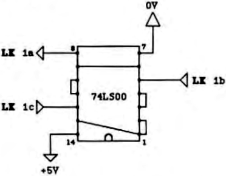

-
Insert the 74LS00, see figure 2, notch or dot towards you. Turn the board
over and solder pin 7 to 0V and pin 14 to the solder pad of R21 with some
thickish tinned copper wire, The two wires have now mechanically secured
the chip to the board.
-
Interconnect the pine of the 74LS00 as shown in figure 3, using some thin
connecting wire, single core preferably.

figure 3:Wiring diagram, viewed from component side.
-
Now connect the four additional links as follows ..
| LK1/b | to | 74LS00 | pin | 5 | (your original 1MHz clock) |
| LK1/c | " | " | " | 12 | (your 2MHz clock) |
| LK1/a | " | " | " | 8 | (output clock) |
| IC5/15 | " | " | " | 1 & 2 | (clock select line) |
| (i.e. IC5 pin 15) |
-
finally double check all the wiring for any mistakes or shorts.
Testing
Re-install the FDC card into your system and reconnect the drive cabling. Power
up and boot up in your normal disk operating system. Everything should work as
before, if not check the voltage level on IC5 pin 15 which should be low. If
this is ok then check that the two clock lines are not swapped. I had no
problems, everything worked first time when I booted up the disk system.
THE Software
Modifying existing software should be quite straight forward. Changes only need
to be made whenever commands that (potentially) move the disk drive’s head are
issued to the WD1797 disk controller chip. I include details of 2 versions of
software, one where primitive disk routines communicate directly with the WD1797
FDC chip and secondly where the routines communicate indirectly via a single
call (i.e. SYS users).
Firstly, for routines that send commands to FDC directly, listing 1 shows the
suggested alterations (in lower case) to the existing code. The existing code is
presented in a hypothetical form, and you may have to alter it slightly in light
of your own circumstances. The ‘Fdcbusy’ subroutine call may in fact be a jump
to some common code shared by ‘HOME:’, ‘SEEK:’ and maybe other routines as well.
In this case just append the source of the ‘stepslow:’ at the end for your
‘Fdcbusy’ routine.